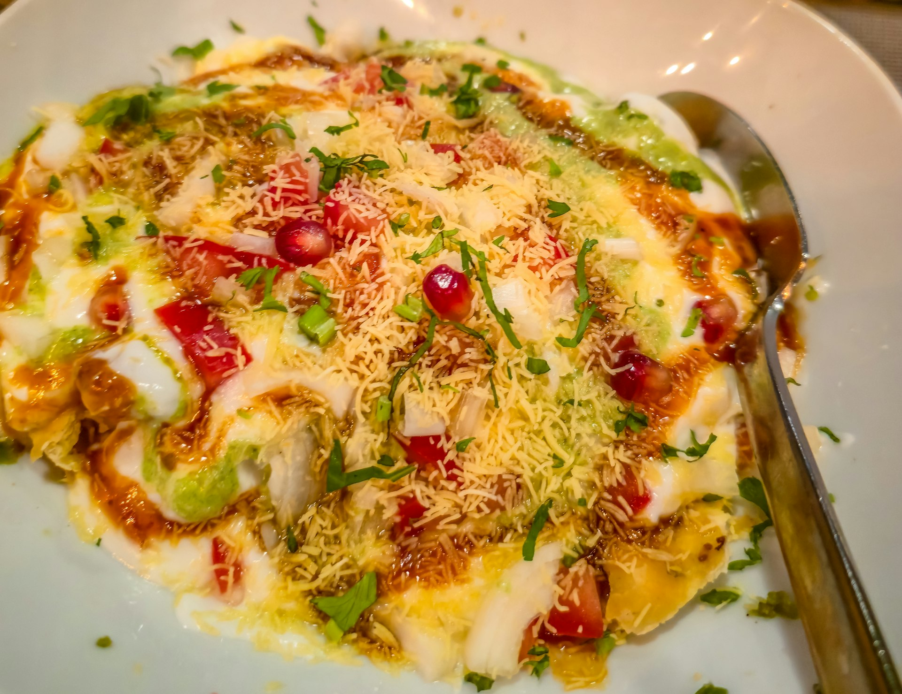
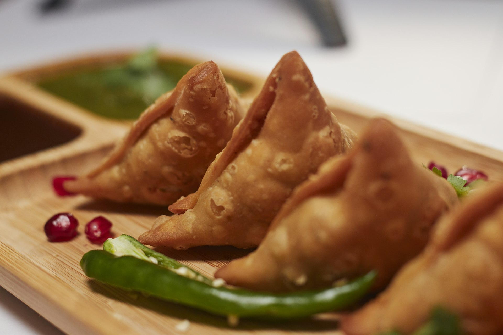
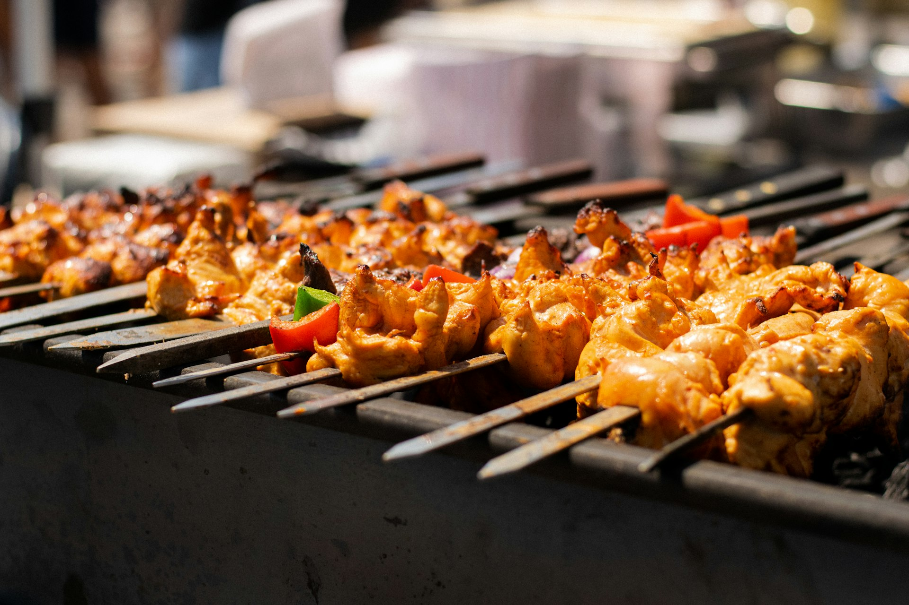
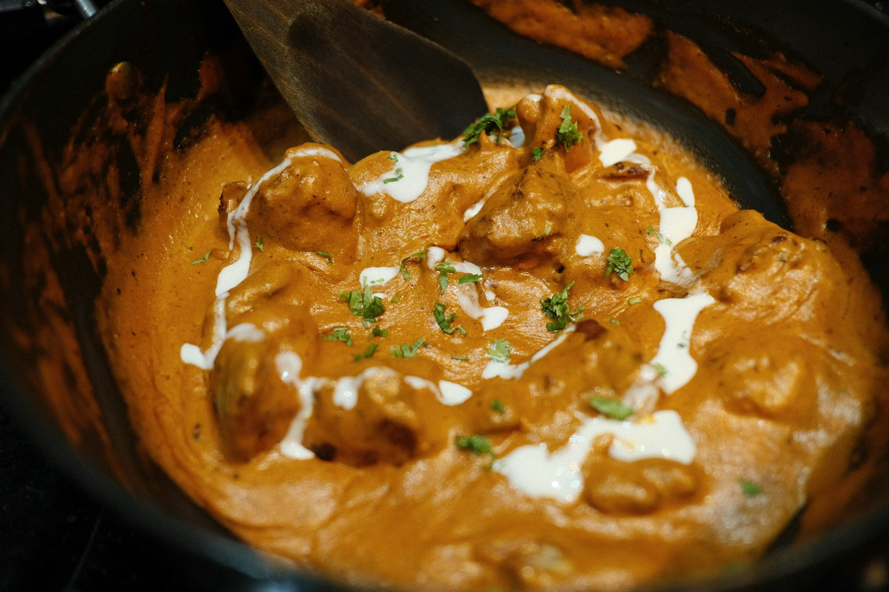
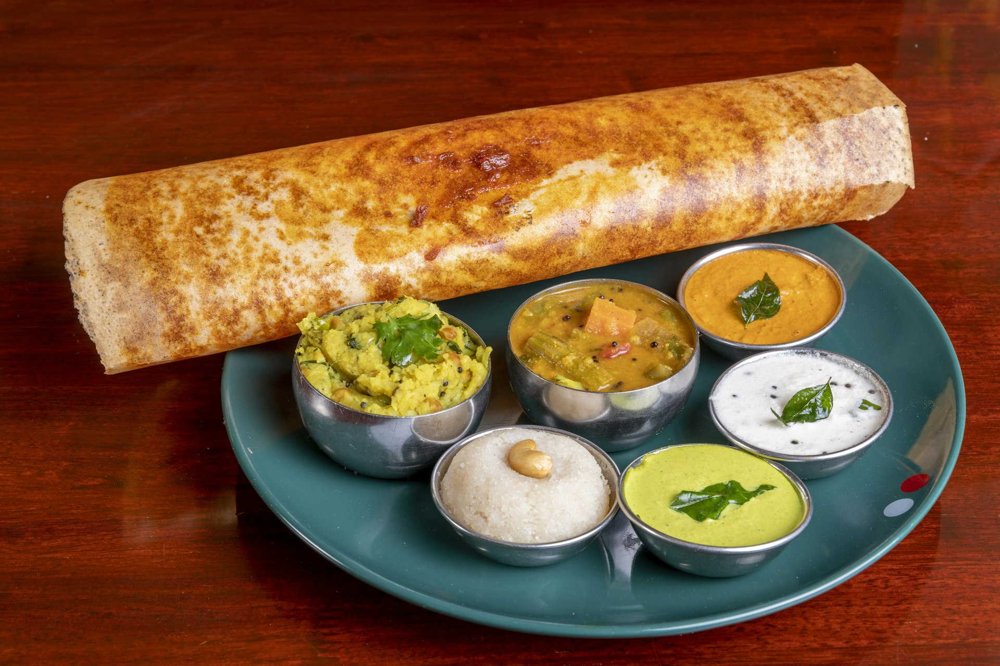
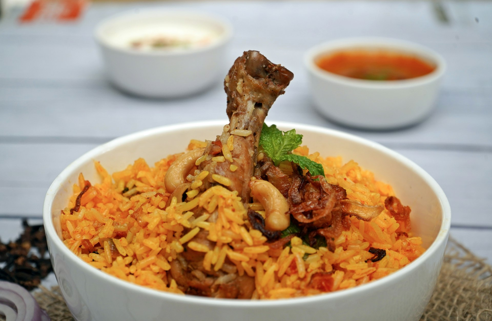
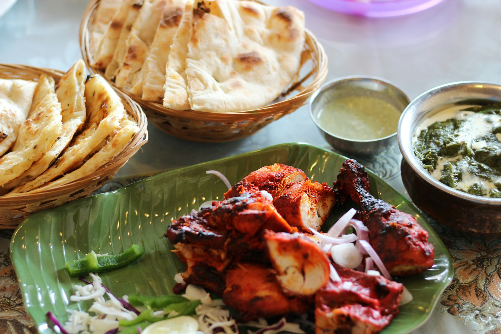

The Masala Dabba.
Every Indian home keeps one tin of spices. Ours holds the menu. Lift a katori.
Spice can be adjusted. Tell your server about allergies.
Kashmiri chilli
Chaat
Ārambh: fifteen chaats, and the meal begins.
- 01Chowpatty Pani Puri ShotsPani Puri / Golgappa
- 02Malai Moti Dahi PuriDahi Batata Puri
- 03Purani Dilli Papdi ChaatPapdi Chaat
- 04Juhu Beach BhelBhel Puri
- 05Samosa Shringar ChaatSamosa Chaat
- 06Dilli Dil TikkiAloo Tikki Chaat
- 07Hass & Hing ChaatAvocado Chaat, a Karva creation
- 08Palak Patta ChaatCrispy Spinach Chaat
- 09Shakarkandi Chaat SaladShakarkandi Chaat
- 10Rajasthani Pyaaz Ki KachooriPyaaz Kachori
- 11Mini Raj KachooriRaj Kachori
- 12Avocado Dahi PooriDahi Puri with Tadka Guacamole
- 13Nachos Paapdi ChaatIndo-Mex Papdi Chaat, a Karva creation
- 14Kamal Kakkdi ChaatCrispy Lotus Stem Chaat
- 15Panchmel Dal MathriPanchmel Dal with Mathri

Meet them at the counterAll fifteen are vegetarian
Fennel
Soups
Four bowls to start slowly.
- 01Badaam ka Shorba
- 02Gulnaar Tamatar
- 03Murgh Yakhni
- 04Tom Kha Nariyal
Mustard seed
Appetizers
Crisp, hot, from the kadai.
- 01Gobhi Sixty-Five
- 02Samosa Trio
- 03Amritsari Machhi
- 04Kurkure Bhindi
- 05Kozhi Milagu Fry
- 06Prawn Koliwada

Garam masala
Kebabs
From the tandoor, charred at the edges.
- 01Galouti of Lamb
- 02Kakori Seekh
- 03Murgh Malai Tikka
- 04Barrah Chaap
- 05Tandoori Jhinga
- 06Paneer Achari Tikka

Turmeric
Curries
Slow gravies, finished with butter and cream.
- 01Murgh Makhani
- 02Rogan Josh
- 03Chicken Tikka Masala
- 04Chicken Butter Masala
- 05Paneer Butter Masala
- 06Paneer Tikka Masala
- 07Malai Kofta
- 08Dal Makhni

Coriander seed
South Indian
Ghee roast, curry leaf and coconut.
- 01Appam & Ishtew
- 02Ghee Roast Dosa
- 03Chettinad Kozhi
- 04Podi Idli
- 05Uttapam of Millet
- 06Andhra Gongura Royyala
- 07Vada Sambhar

Saffron
Rice & biryani
Sealed, and slow on dum.
- 01Hyderabadi Gosht
- 02Subz Dum Biryani
- 03Mutton Biryani
- 04Chicken Biryani

Cumin
Breads
Torn warm, straight from the tandoor.
- 01Lachha Paratha
- 02Amritsari Kulcha
- 03Phulke
- 04Tandoori Roti
- 05Butter Naan
- 06Butter Garlic Naan

Green cardamom
Desserts
Saffron, cardamom, and a last spoonful.
- 01Shahi Tukda
- 02Kesar Phirni
- 03Moong Dal Halwa with pistachio sablé & kunafa
Lemongrass and soy
Thai kitchen
The second kitchen. Two dishes to begin; the full Thai menu is at the table.
- 01Tom Kha
- 02Pad See Ew